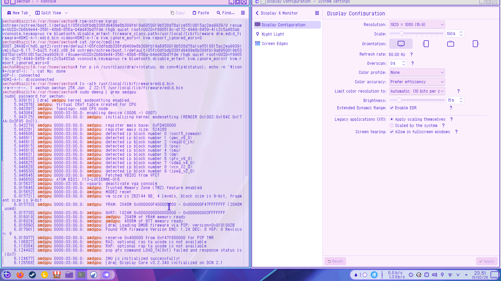
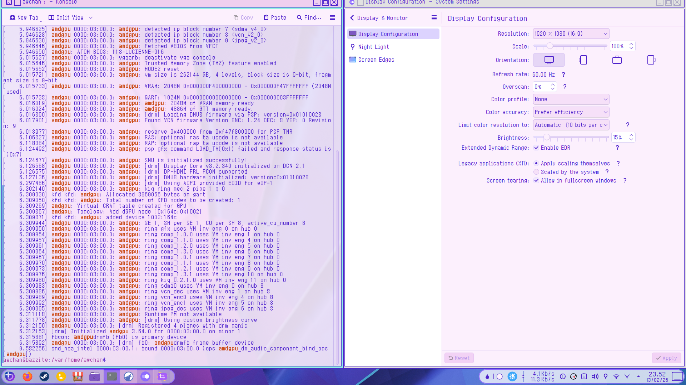
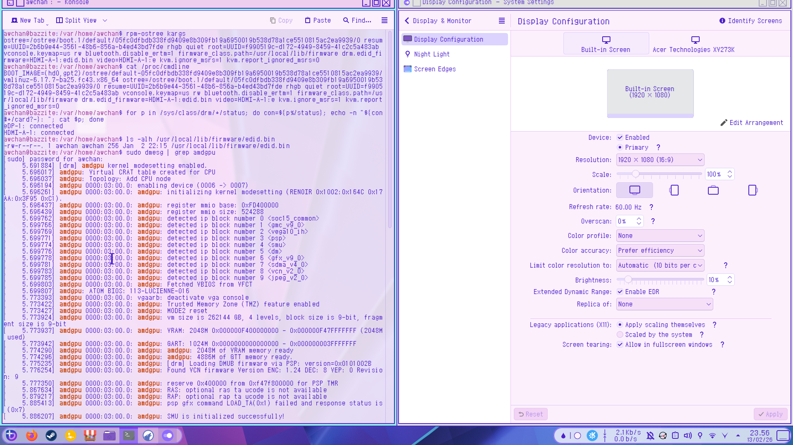
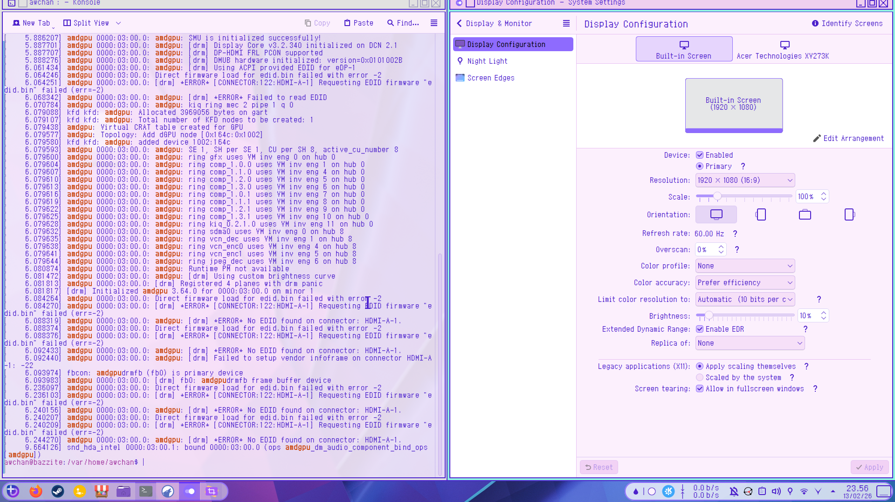

AdditionalInfo
for Reference
Before :


Here is the output shown in the imageawchan@bazzite:/var/home/awchan$ rpm-ostree kargs
ostree=/ostree/boot.1/default/05fc0dfbdb338fd9409e8b309fb19a6950019b538d78a1ce5510815ac2ea9939/0 resume=UUID=2b6b9e44-3561-48b6-856a-b4ed43bd7fde rhgb quiet root=UUID=f990519c-d172-4949-8459-41c2c5a483ab vconsole.keymap=us rw bluetooth.disable_ertm=1 firmware_class.path=/usr/local/lib/firmware drm.edid_firmware=HDMI-A-1:edid.bin video=HDMI-A-1:e kvm.ignore_msrs=1 kvm.report_ignored_msrs=0
awchan@bazzite:/var/home/awchan$ cat /proc/cmdline
BOOT_IMAGE=(hd0,gpt2)/ostree/default-05fc0dfbdb338fd9409e8b309fb19a6950019b538d78a1ce5510815ac2ea9939/vmlinuz-6.17.7-ba25.fc43.x86_64 ostree=/ostree/boot.1/default/05fc0dfbdb338fd9409e8b309fb19a6950019b538d78a1ce5510815ac2ea9939/0 resume=UUID=2b6b9e44-3561-48b6-856a-b4ed43bd7fde rhgb quiet root=UUID=f990519c-d172-4949-8459-41c2c5a483ab vconsole.keymap=us rw bluetooth.disable_ertm=1 kvm.ignore_msrs=1 kvm.report_ignored_msrs=0
awchan@bazzite:/var/home/awchan$ for p in /sys/class/drm/*/status; do con=${p%/status}; echo -n "${con#*/card?-}: "; cat $p; done
eDP-1: connected
HDMI-A-1: disconnected
awchan@bazzite:/var/home/awchan$ ls -alh /usr/local/lib/firmware/edid.bin -rw-r--r--. 1 awchan awchan 256 Jan 2 22:15 /usr/local/lib/firmware/edid.bin
awchan@bazzite:/var/home/awchan$ sudo dmesg | grep amdgpu[sudo] password for awchan:
[ 5.939151] [drm] amdgpu kernel modesetting enabled.
[ 5.942876] amdgpu: Virtual CRAT table created for CPU
[ 5.942897] amdgpu: Topology: Add CPU node
[ 5.943064] amdgpu 0000:03:00.0: enabling device (0006 -> 0007)
[ 5.943125] amdgpu 0000:03:00.0: amdgpu: initializing kernel modesetting (RENOIR 0x1002:0x164C 0x17AA:0x3F95 0xC1).
[ 5.943279] amdgpu 0000:03:00.0: amdgpu: register mmio base: 0xFD400000
[ 5.943281] amdgpu 0000:03:00.0: amdgpu: register mmio size: 524288
[ 5.946606] amdgpu 0000:03:00.0: amdgpu: detected ip block number 0 <soc15_common>
[ 5.946611] amdgpu 0000:03:00.0: amdgpu: detected ip block number 1 <gmc_v9_0>
[ 5.946613] amdgpu 0000:03:00.0: amdgpu: detected ip block number 2 <vega10_ih>
[ 5.946615] amdgpu 0000:03:00.0: amdgpu: detected ip block number 3 <psp>
[ 5.946618] amdgpu 0000:03:00.0: amdgpu: detected ip block number 4 <smu>
[ 5.946621] amdgpu 0000:03:00.0: amdgpu: detected ip block number 5 <dm>
[ 5.946623] amdgpu 0000:03:00.0: amdgpu: detected ip block number 6 <gfx_v9_0>
[ 5.946625] amdgpu 0000:03:00.0: amdgpu: detected ip block number 7 <sdma_v4_0>
[ 5.946628] amdgpu 0000:03:00.0: amdgpu: detected ip block number 8 <vcn_v2_0>
[ 5.946630] amdgpu 0000:03:00.0: amdgpu: detected ip block number 9 <jpeg_v2_0>
[ 5.946646] amdgpu 0000:03:00.0: amdgpu: Fetched VBIOS from VFCT
[ 5.946650] amdgpu: ATOM BIOS: 113-LUCIENNE-016
[ 6.015637] amdgpu 0000:03:00.0: vgaarb: deactivate vga console
[ 6.015646] amdgpu 0000:03:00.0: amdgpu: Trusted Memory Zone (TMZ) feature enabled
[ 6.015652] amdgpu 0000:03:00.0: amdgpu: MODE2 reset
[ 6.015721] amdgpu 0000:03:00.0: amdgpu: vm size is 262144 GB, 4 levels, block size is 9-bit, fragment size is 9-bit
[ 6.015733] amdgpu 0000:03:00.0: amdgpu: VRAM: 2048M 0x000000F400000000 - 0x000000F47FFFFFFF (2048M used)
[ 6.015738] amdgpu 0000:03:00.0: amdgpu: GART: 1024M 0x0000000000000000 - 0x000000003FFFFFFF
[ 6.016019] amdgpu 0000:03:00.0: amdgpu: amdgpu: 2048M of VRAM memory ready
[ 6.016024] amdgpu 0000:03:00.0: amdgpu: amdgpu: 4886M of GTT memory ready.
[ 6.016890] amdgpu 0000:03:00.0: amdgpu: [drm] Loading DMUB firmware via PSP: version=0x0101002B
[ 6.017901] amdgpu 0000:03:00.0: amdgpu: Found VCN firmware Version ENC: 1.24 DEC: 8 VEP: 0 Revision: 9
[ 6.018977] amdgpu 0000:03:00.0: amdgpu: reserve 0x400000 from 0xf47f800000 for PSP TMR
[ 6.106827] amdgpu 0000:03:00.0: amdgpu: RAS: optional ras ta ucode is not available
[ 6.118384] amdgpu 0000:03:00.0: amdgpu: RAP: optional rap ta ucode is not available
[ 6.124492] amdgpu 0000:03:00.0: amdgpu: psp gfx command LOAD_TA(0x1) failed and response status is (0x7)
[ 6.124677] amdgpu 0000:03:00.0: amdgpu: SMU is initialized successfully!
[ 6.126568] amdgpu 0000:03:00.0: amdgpu: [drm] Display Core v3.2.340 initialized on DCN 2.1
[ 6.126575] amdgpu 0000:03:00.0: amdgpu: [drm] DP-HDMI FRL PCON supported
[ 6.127136] amdgpu 0000:03:00.0: amdgpu: [drm] DMUB hardware initialized: version=0x0101002B
[ 6.297486] amdgpu 0000:03:00.0: amdgpu: [drm] Using ACPI provided EDID for eDP-1
[ 6.302140] amdgpu 0000:03:00.0: amdgpu: kiq ring mec 2 pipe 1 q 0
[ 6.309030] kfd kfd: amdgpu: Allocated 3969056 bytes on gart
[ 6.309050] kfd kfd: amdgpu: Total number of KFD nodes to be created: 1
[ 6.309269] amdgpu: Virtual CRAT table created for GPU
[ 6.309867] amdgpu: Topology: Add dGPU node [0x164c:0x1002]
[ 6.309871] kfd kfd: amdgpu: added device 1002:164c
[ 6.309944] amdgpu 0000:03:00.0: amdgpu: SE 1, SH per SE 1, CU per SH 8, active_cu_number 8
[ 6.309950] amdgpu 0000:03:00.0: amdgpu: ring gfx uses VM inv eng 0 on hub 0
[ 6.309954] amdgpu 0000:03:00.0: amdgpu: ring comp_1.0.0 uses VM inv eng 1 on hub 0
[ 6.309957] amdgpu 0000:03:00.0: amdgpu: ring comp_1.1.0 uses VM inv eng 4 on hub 0
[ 6.309961] amdgpu 0000:03:00.0: amdgpu: ring comp_1.2.0 uses VM inv eng 5 on hub 0
[ 6.309964] amdgpu 0000:03:00.0: amdgpu: ring comp_1.3.0 uses VM inv eng 6 on hub 0
[ 6.309967] amdgpu 0000:03:00.0: amdgpu: ring comp_1.0.1 uses VM inv eng 7 on hub 0
[ 6.309970] amdgpu 0000:03:00.0: amdgpu: ring comp_1.1.1 uses VM inv eng 8 on hub 0
[ 6.309973] amdgpu 0000:03:00.0: amdgpu: ring comp_1.2.1 uses VM inv eng 9 on hub 0
[ 6.309976] amdgpu 0000:03:00.0: amdgpu: ring comp_1.3.1 uses VM inv eng 10 on hub 0
[ 6.309980] amdgpu 0000:03:00.0: amdgpu: ring kiq_0.2.1.0 uses VM inv eng 11 on hub 0
[ 6.309983] amdgpu 0000:03:00.0: amdgpu: ring sdma0 uses VM inv eng 0 on hub 8
[ 6.309986] amdgpu 0000:03:00.0: amdgpu: ring vcn_dec uses VM inv eng 1 on hub 8
[ 6.309989] amdgpu 0000:03:00.0: amdgpu: ring vcn_enc0 uses VM inv eng 4 on hub 8
[ 6.309992] amdgpu 0000:03:00.0: amdgpu: ring vcn_enc1 uses VM inv eng 5 on hub 8
[ 6.309995] amdgpu 0000:03:00.0: amdgpu: ring jpeg_dec uses VM inv eng 6 on hub 8
[ 6.311118] amdgpu 0000:03:00.0: amdgpu: Runtime PM not available
[ 6.311778] amdgpu 0000:03:00.0: amdgpu: [drm] Using custom brightness curve
[ 6.312150] amdgpu 0000:03:00.0: [drm] Registered 4 planes with drm panic
[ 6.312153] [drm] Initialized amdgpu 3.64.0 for 0000:03:00.0 on minor 1
[ 6.315881] fbcon: amdgpudrmfb (fb0) is primary device
[ 6.315892] amdgpu 0000:03:00.0: [drm] fb0: amdgpudrmfb frame buffer device
[ 9.582256] snd_hda_intel 0000:03:00.1: bound 0000:03:00.0 (ops amdgpu_dm_audio_component_bind_ops [amdgpu])
After :


Here is the output that shown in the image :awchan@bazzite:/var/home/awchan$ rpm-ostree kargs
ostree=/ostree/boot.1/default/05fc0dfbdb338fd9409e8b309fb19a6950019b538d78a1ce5510815ac2ea9939/0 resume=UUID=2b6b9e44-3561-48b6-856a-b4ed43bd7fde rhgb quiet root=UUID=f990519c-d172-4949-8459-41c2c5a483ab vconsole.keymap=us rw bluetooth.disable_ertm=1 firmware_class.path=/usr/local/lib/firmware drm.edid_firmware=HDMI-A-1:edid.bin video=HDMI-A-1:e kvm.ignore_msrs=1 kvm.report_ignored_msrs=0
awchan@bazzite:/var/home/awchan$ cat /proc/cmdline
BOOT_IMAGE=(hd0,gpt2)/ostree/default-05fc0dfbdb338fd9409e8b309fb19a6950019b538d78a1ce5510815ac2ea9939/vmlinuz-6.17.7-ba25.fc43.x86_64 ostree=/ostree/boot.1/default/05fc0dfbdb338fd9409e8b309fb19a6950019b538d78a1ce5510815ac2ea9939/0 resume=UUID=2b6b9e44-3561-48b6-856a-b4ed43bd7fde rhgb quiet root=UUID=f990519c-d172-4949-8459-41c2c5a483ab vconsole.keymap=us rw bluetooth.disable_ertm=1 firmware_class.path=/usr/local/lib/firmware drm.edid_firmware=HDMI-A-1:edid.bin video=HDMI-A-1:e kvm.ignore_msrs=1 kvm.report_ignored_msrs=0
awchan@bazzite:/var/home/awchan$ for p in /sys/class/drm/*/status; do con=${p%/status}; echo -n "${con#*/card?-}: "; cat $p; done
eDP-1: connected
HDMI-A-1: connected
awchan@bazzite:/var/home/awchan$ ls -alh /usr/local/lib/firmware/edid.bin
-rw-r--r--. 1 awchan awchan 256 Jan 2 22:15 /usr/local/lib/firmware/edid.bin
awchan@bazzite:/var/home/awchan$ sudo dmesg | grep amdgpu
[sudo] password for awchan:
[ 5.691884] [drm] amdgpu kernel modesetting enabled.
[ 5.696017] amdgpu: Virtual CRAT table created for CPU
[ 5.696037] amdgpu: Topology: Add CPU node
[ 5.696194] amdgpu 0000:03:00.0: enabling device (0006 -> 0007)
[ 5.696261] amdgpu 0000:03:00.0: amdgpu: initializing kernel modesetting (RENOIR 0x1002:0x164C 0x17AA:0x3F95 0xC1).
[ 5.696437] amdgpu 0000:03:00.0: amdgpu: register mmio base: 0xFD400000
[ 5.696439] amdgpu 0000:03:00.0: amdgpu: register mmio size: 524288
[ 5.699762] amdgpu 0000:03:00.0: amdgpu: detected ip block number 0 <soc15_common>
[ 5.699766] amdgpu 0000:03:00.0: amdgpu: detected ip block number 1 <gmc_v9_0>
[ 5.699769] amdgpu 0000:03:00.0: amdgpu: detected ip block number 2 <vega10_ih>
[ 5.699771] amdgpu 0000:03:00.0: amdgpu: detected ip block number 3 <psp>
[ 5.699774] amdgpu 0000:03:00.0: amdgpu: detected ip block number 4 <smu>
[ 5.699776] amdgpu 0000:03:00.0: amdgpu: detected ip block number 5 <dm>
[ 5.699778] amdgpu 0000:03:00.0: amdgpu: detected ip block number 6 <gfx_v9_0>
[ 5.699781] amdgpu 0000:03:00.0: amdgpu: detected ip block number 7 <sdma_v4_0>
[ 5.699783] amdgpu 0000:03:00.0: amdgpu: detected ip block number 8 <vcn_v2_0>
[ 5.699785] amdgpu 0000:03:00.0: amdgpu: detected ip block number 9 <jpeg_v2_0>
[ 5.699803] amdgpu 0000:03:00.0: amdgpu: Fetched VBIOS from VFCT
[ 5.699807] amdgpu: ATOM BIOS: 113-LUCIENNE-016
[ 5.773393] amdgpu 0000:03:00.0: vgaarb: deactivate vga console
[ 5.773422] amdgpu 0000:03:00.0: amdgpu: Trusted Memory Zone (TMZ) feature enabled
[ 5.773427] amdgpu 0000:03:00.0: amdgpu: MODE2 reset
[ 5.773924] amdgpu 0000:03:00.0: amdgpu: vm size is 262144 GB, 4 levels, block size is 9-bit, fragment size is 9-bit
[ 5.773937] amdgpu 0000:03:00.0: amdgpu: VRAM: 2048M 0x000000F400000000 - 0x000000F47FFFFFFF (2048M used)
[ 5.773942] amdgpu 0000:03:00.0: amdgpu: GART: 1024M 0x0000000000000000 - 0x000000003FFFFFFF
[ 5.774290] amdgpu 0000:03:00.0: amdgpu: amdgpu: 2048M of VRAM memory ready
[ 5.774296] amdgpu 0000:03:00.0: amdgpu: amdgpu: 4886M of GTT memory ready.
[ 5.775235] amdgpu 0000:03:00.0: amdgpu: [drm] Loading DMUB firmware via PSP: version=0x0101002B
[ 5.776254] amdgpu 0000:03:00.0: amdgpu: Found VCN firmware Version ENC: 1.24 DEC: 8 VEP: 0 Revision: 9
[ 5.777350] amdgpu 0000:03:00.0: amdgpu: reserve 0x400000 from 0xf47f800000 for PSP TMR
[ 5.867634] amdgpu 0000:03:00.0: amdgpu: RAS: optional ras ta ucode is not available
[ 5.879217] amdgpu 0000:03:00.0: amdgpu: RAP: optional rap ta ucode is not available
[ 5.885413] amdgpu 0000:03:00.0: amdgpu: psp gfx command LOAD_TA(0x1) failed and response status is (0x7)
[ 5.886207] amdgpu 0000:03:00.0: amdgpu: SMU is initialized successfully!
[ 5.887701] amdgpu 0000:03:00.0: amdgpu: [drm] Display Core v3.2.340 initialized on DCN 2.1
[ 5.887707] amdgpu 0000:03:00.0: amdgpu: [drm] DP-HDMI FRL PCON supported
[ 5.888276] amdgpu 0000:03:00.0: amdgpu: [drm] DMUB hardware initialized: version=0x0101002B
[ 6.061434] amdgpu 0000:03:00.0: amdgpu: [drm] Using ACPI provided EDID for eDP-1
[ 6.064246] amdgpu 0000:03:00.0: Direct firmware load for edid.bin failed with error -2
[ 6.064251] amdgpu 0000:03:00.0: [drm] *ERROR* [CONNECTOR:122:HDMI-A-1] Requesting EDID firmware "edid.bin" failed (err=-2)
[ 6.068342] amdgpu 0000:03:00.0: amdgpu: [drm] *ERROR* Failed to read EDID
[ 6.070784] amdgpu 0000:03:00.0: amdgpu: kiq ring mec 2 pipe 1 q 0
[ 6.079088] kfd kfd: amdgpu: Allocated 3969056 bytes on gart
[ 6.079107] kfd kfd: amdgpu: Total number of KFD nodes to be created: 1
[ 6.079438] amdgpu: Virtual CRAT table created for GPU
[ 6.079577] amdgpu: Topology: Add dGPU node [0x164c:0x1002]
[ 6.079580] kfd kfd: amdgpu: added device 1002:164c
[ 6.079593] amdgpu 0000:03:00.0: amdgpu: SE 1, SH per SE 1, CU per SH 8, active_cu_number 8
[ 6.079600] amdgpu 0000:03:00.0: amdgpu: ring gfx uses VM inv eng 0 on hub 0
[ 6.079604] amdgpu 0000:03:00.0: amdgpu: ring comp_1.0.0 uses VM inv eng 1 on hub 0
[ 6.079607] amdgpu 0000:03:00.0: amdgpu: ring comp_1.1.0 uses VM inv eng 4 on hub 0
[ 6.079610] amdgpu 0000:03:00.0: amdgpu: ring comp_1.2.0 uses VM inv eng 5 on hub 0
[ 6.079613] amdgpu 0000:03:00.0: amdgpu: ring comp_1.3.0 uses VM inv eng 6 on hub 0
[ 6.079616] amdgpu 0000:03:00.0: amdgpu: ring comp_1.0.1 uses VM inv eng 7 on hub 0
[ 6.079619] amdgpu 0000:03:00.0: amdgpu: ring comp_1.1.1 uses VM inv eng 8 on hub 0
[ 6.079622] amdgpu 0000:03:00.0: amdgpu: ring comp_1.2.1 uses VM inv eng 9 on hub 0
[ 6.079625] amdgpu 0000:03:00.0: amdgpu: ring comp_1.3.1 uses VM inv eng 10 on hub 0
[ 6.079628] amdgpu 0000:03:00.0: amdgpu: ring kiq_0.2.1.0 uses VM inv eng 11 on hub 0
[ 6.079632] amdgpu 0000:03:00.0: amdgpu: ring sdma0 uses VM inv eng 0 on hub 8
[ 6.079635] amdgpu 0000:03:00.0: amdgpu: ring vcn_dec uses VM inv eng 1 on hub 8
[ 6.079638] amdgpu 0000:03:00.0: amdgpu: ring vcn_enc0 uses VM inv eng 4 on hub 8
[ 6.079641] amdgpu 0000:03:00.0: amdgpu: ring vcn_enc1 uses VM inv eng 5 on hub 8
[ 6.079644] amdgpu 0000:03:00.0: amdgpu: ring jpeg_dec uses VM inv eng 6 on hub 8
[ 6.080874] amdgpu 0000:03:00.0: amdgpu: Runtime PM not available
[ 6.081472] amdgpu 0000:03:00.0: amdgpu: [drm] Using custom brightness curve
[ 6.081813] amdgpu 0000:03:00.0: [drm] Registered 4 planes with drm panic
[ 6.081817] [drm] Initialized amdgpu 3.64.0 for 0000:03:00.0 on minor 1
[ 6.084264] amdgpu 0000:03:00.0: Direct firmware load for edid.bin failed with error -2
[ 6.084270] amdgpu 0000:03:00.0: [drm] *ERROR* [CONNECTOR:122:HDMI-A-1] Requesting EDID firmware "edid.bin" failed (err=-2)
[ 6.088319] amdgpu 0000:03:00.0: amdgpu: [drm] *ERROR* No EDID found on connector: HDMI-A-1.
[ 6.088374] amdgpu 0000:03:00.0: Direct firmware load for edid.bin failed with error -2
[ 6.088376] amdgpu 0000:03:00.0: [drm] *ERROR* [CONNECTOR:122:HDMI-A-1] Requesting EDID firmware "edid.bin" failed (err=-2)
[ 6.092433] amdgpu 0000:03:00.0: amdgpu: [drm] *ERROR* No EDID found on connector: HDMI-A-1.
[ 6.092440] amdgpu 0000:03:00.0: amdgpu: [drm] Failed to setup vendor infoframe on connector HDMI-A-1: -22
[ 6.093974] fbcon: amdgpudrmfb (fb0) is primary device
[ 6.093983] amdgpu 0000:03:00.0: [drm] fb0: amdgpudrmfb frame buffer device
[ 6.236097] amdgpu 0000:03:00.0: Direct firmware load for edid.bin failed with error -2
[ 6.236103] amdgpu 0000:03:00.0: [drm] *ERROR* [CONNECTOR:122:HDMI-A-1] Requesting EDID firmware "edid.bin" failed (err=-2)
[ 6.240156] amdgpu 0000:03:00.0: amdgpu: [drm] *ERROR* No EDID found on connector: HDMI-A-1.
[ 6.240207] amdgpu 0000:03:00.0: Direct firmware load for edid.bin failed with error -2
[ 6.240209] amdgpu 0000:03:00.0: [drm] *ERROR* [CONNECTOR:122:HDMI-A-1] Requesting EDID firmware "edid.bin" failed (err=-2)
[ 6.244270] amdgpu 0000:03:00.0: amdgpu: [drm] *ERROR* No EDID found on connector: HDMI-A-1.
[ 9.664126] snd_hda_intel 0000:03:00.1: bound 0000:03:00.0 (ops amdgpu_dm_audio_component_bind_ops [amdgpu])
Here you can see that i remove these parameter upon this specific booting by manually editing it during grub
awchan@bazzite:/var/home/awchan$ rpm-ostree kargs
ostree=/ostree/boot.1/default/05fc0dfbdb338fd9409e8b309fb19a6950019b538d78a1ce5510815ac2ea9939/0 resume=UUID=2b6b9e44-3561-48b6-856a-b4ed43bd7fde rhgb quiet root=UUID=f990519c-d172-4949-8459-41c2c5a483ab vconsole.keymap=us rw bluetooth.disable_ertm=1 firmware_class.path=/usr/local/lib/firmware drm.edid_firmware=HDMI-A-1:edid.bin video=HDMI-A-1:e kvm.ignore_msrs=1 kvm.report_ignored_msrs=0
awchan@bazzite:/var/home/awchan$ cat /proc/cmdline
BOOT_IMAGE=(hd0,gpt2)/ostree/default-05fc0dfbdb338fd9409e8b309fb19a6950019b538d78a1ce5510815ac2ea9939/vmlinuz-6.17.7-ba25.fc43.x86_64 ostree=/ostree/boot.1/default/05fc0dfbdb338fd9409e8b309fb19a6950019b538d78a1ce5510815ac2ea9939/0 resume=UUID=2b6b9e44-3561-48b6-856a-b4ed43bd7fde rhgb quiet root=UUID=f990519c-d172-4949-8459-41c2c5a483ab vconsole.keymap=us rw bluetooth.disable_ertm=1 kvm.ignore_msrs=1 kvm.report_ignored_msrs=0
you can see that on those current boot there is no argument for edid or whatever here.
you can also see that it had no connection for HDMI-A-1
awchan@bazzite:/var/home/awchan$ for p in /sys/class/drm/*/status; do con=${p%/status}; echo -n "${con#*/card?-}: "; cat $p; done
eDP-1: connected
HDMI-A-1: disconnected
but after rebooting,as you can see here that curent boot deployment had same parameter as the kargs and it say there is something connected on HDMI-A-1 .
awchan@bazzite:/var/home/awchan$ rpm-ostree kargs
ostree=/ostree/boot.1/default/05fc0dfbdb338fd9409e8b309fb19a6950019b538d78a1ce5510815ac2ea9939/0 resume=UUID=2b6b9e44-3561-48b6-856a-b4ed43bd7fde rhgb quiet root=UUID=f990519c-d172-4949-8459-41c2c5a483ab vconsole.keymap=us rw bluetooth.disable_ertm=1 firmware_class.path=/usr/local/lib/firmware drm.edid_firmware=HDMI-A-1:edid.bin video=HDMI-A-1:e kvm.ignore_msrs=1 kvm.report_ignored_msrs=0
awchan@bazzite:/var/home/awchan$ cat /proc/cmdline
BOOT_IMAGE=(hd0,gpt2)/ostree/default-05fc0dfbdb338fd9409e8b309fb19a6950019b538d78a1ce5510815ac2ea9939/vmlinuz-6.17.7-ba25.fc43.x86_64 ostree=/ostree/boot.1/default/05fc0dfbdb338fd9409e8b309fb19a6950019b538d78a1ce5510815ac2ea9939/0 resume=UUID=2b6b9e44-3561-48b6-856a-b4ed43bd7fde rhgb quiet root=UUID=f990519c-d172-4949-8459-41c2c5a483ab vconsole.keymap=us rw bluetooth.disable_ertm=1 firmware_class.path=/usr/local/lib/firmware drm.edid_firmware=HDMI-A-1:edid.bin video=HDMI-A-1:e kvm.ignore_msrs=1 kvm.report_ignored_msrs=0
awchan@bazzite:/var/home/awchan$ for p in /sys/class/drm/*/status; do con=${p%/status}; echo -n "${con#*/card?-}: "; cat $p; done
eDP-1: connected
HDMI-A-1: connected
and yeah although here it say it failed to find the related edid.bin , the OS itself manage to get the fake monitor show up on display configuration
[ 6.080874] amdgpu 0000:03:00.0: amdgpu: Runtime PM not available
[ 6.081472] amdgpu 0000:03:00.0: amdgpu: [drm] Using custom brightness curve
[ 6.081813] amdgpu 0000:03:00.0: [drm] Registered 4 planes with drm panic
[ 6.081817] [drm] Initialized amdgpu 3.64.0 for 0000:03:00.0 on minor 1
[ 6.084264] amdgpu 0000:03:00.0: Direct firmware load for edid.bin failed with error -2
[ 6.084270] amdgpu 0000:03:00.0: [drm] *ERROR* [CONNECTOR:122:HDMI-A-1] Requesting EDID firmware "edid.bin" failed (err=-2)
[ 6.088319] amdgpu 0000:03:00.0: amdgpu: [drm] *ERROR* No EDID found on connector: HDMI-A-1.
[ 6.088374] amdgpu 0000:03:00.0: Direct firmware load for edid.bin failed with error -2
[ 6.088376] amdgpu 0000:03:00.0: [drm] *ERROR* [CONNECTOR:122:HDMI-A-1] Requesting EDID firmware "edid.bin" failed (err=-2)
[ 6.092433] amdgpu 0000:03:00.0: amdgpu: [drm] *ERROR* No EDID found on connector: HDMI-A-1.
[ 6.092440] amdgpu 0000:03:00.0: amdgpu: [drm] Failed to setup vendor infoframe on connector HDMI-A-1: -22
[ 6.093974] fbcon: amdgpudrmfb (fb0) is primary device
[ 6.093983] amdgpu 0000:03:00.0: [drm] fb0: amdgpudrmfb frame buffer device
[ 6.236097] amdgpu 0000:03:00.0: Direct firmware load for edid.bin failed with error -2
[ 6.236103] amdgpu 0000:03:00.0: [drm] *ERROR* [CONNECTOR:122:HDMI-A-1] Requesting EDID firmware "edid.bin" failed (err=-2)
[ 6.240156] amdgpu 0000:03:00.0: amdgpu: [drm] *ERROR* No EDID found on connector: HDMI-A-1.
[ 6.240207] amdgpu 0000:03:00.0: Direct firmware load for edid.bin failed with error -2
[ 6.240209] amdgpu 0000:03:00.0: [drm] *ERROR* [CONNECTOR:122:HDMI-A-1] Requesting EDID firmware "edid.bin" failed (err=-2)
[ 6.244270] amdgpu 0000:03:00.0: amdgpu: [drm] *ERROR* No EDID found on connector: HDMI-A-1.
tbh i also check it on another laptop of mine to make sure everything and yeah the output from dmesg also said it cannot find the related whateveryounameedid.bin file and yet it work just fine.